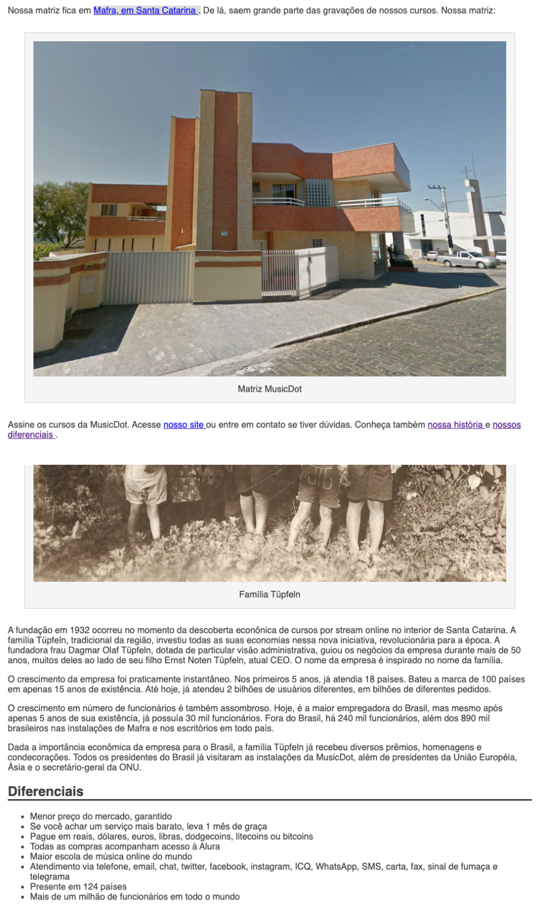

Agora que temos mais seções e bastante conteúdo, podemos melhorar a navegação e a experiência das pessoa que acessarem essa página. Adicionaremos vários links úteis no conteúdo que já temos.
No segundo parágrafo da página adicione um link ao redor de "Mafra, em Santa Catarina" que aponta para a localização ficticia da MusicDot no Google Maps: "http://maps.google.com.br/?q=190,GabrielDequech,Mafra,SC".
No terceiro parágrafo da página, adicione os seguintes links:
"nosso site" apontando para a página principal do nosso site em "index.html"
"nossa história" apontando para a página sobre, porém tendo como alvo o subtítulo <h2> História <h2>
"nossos diferenciais" apontando para a página sobre, porém tendo como alvo o subtítulo <h2> Diferenciais <h2>
